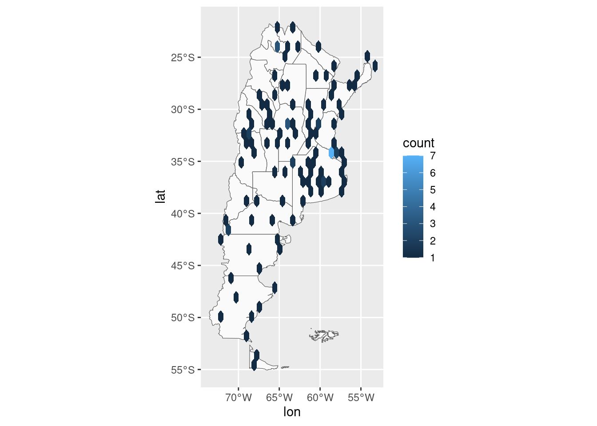
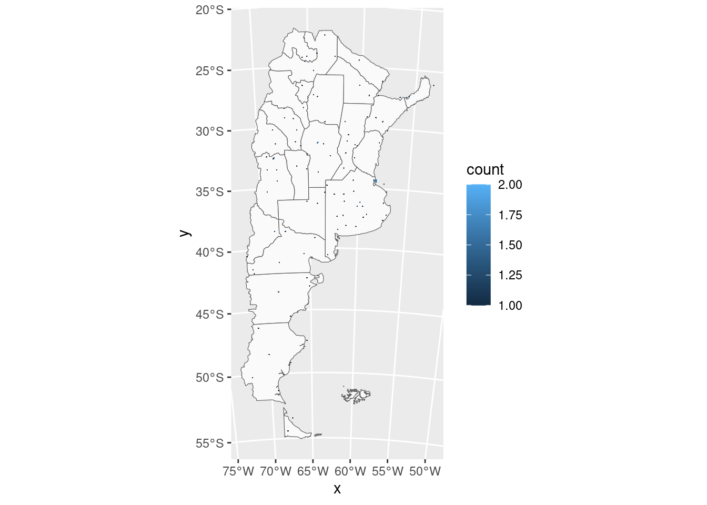
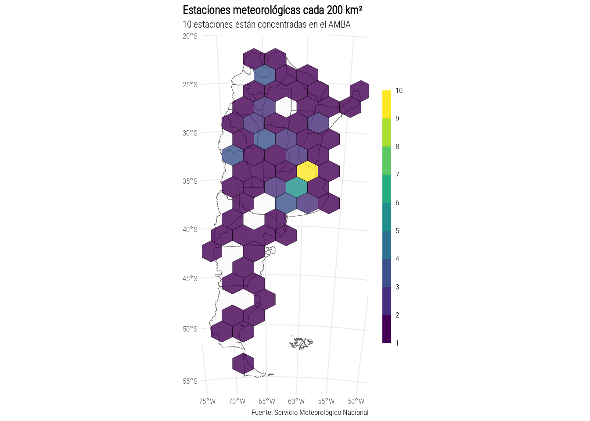

Yo se que parezco un disco rayado pero posta que tenemos pocas estaciones meteorológicas en Argentina y hay que mostrarlo.
estaciones <- fread("https://raw.githubusercontent.com/eliocamp/r-clima/fffb3fa596bc73afeeaa2a6296804da436e82fd3/datos/estaciones_smn.csv") %>%
.[provincia != "ANTARTIDA"] # Para hacer un mapa mas chiquito sin la Antartida
map_proj <- "+proj=lcc +lat_1=-30.965999603271484375 +lat_2=-30.965999603271484375 +lat_0=-30.96600341796875 +lon_0=-63.5670166015625 +a=6370000 +b=6370000"
mapa <- rnaturalearth::ne_states(c("Argentina", "Falkland Islands"), returnclass = "sf")Y yo pensé que esto iba a ser una vueltita a la plaza pero resulta que graficar hexágonos sobre un mapa no es tan simple como parece. Gracias a quien se le ocurrió esto como consigna del día.
estaciones %>%
ggplot(aes(lon, lat)) +
geom_sf(data = mapa, inherit.aes = FALSE, fill = "grey98") +
geom_hex()
En el mapa los hexágonos están deformados porque tiene el mismo ancho y alto, que luego se grafica en un mapa donde las coordenadas no cambian igual en los 2 ejes. Esto es un problema también porque de la manera que está orientado el hexágono que genera geom_hex() implica que el alto y el ancho presentan cosas distintas. El alto va de vertice a vertice y el ancho de lado a lado.
Vamos a seguir a Andrew P. Wheeler que hizo todo el trabajo acá pero españolizado.
Primero, ancho_hex() devuelve el ancho del hexágono para
un determinado alto.
ancho_hex <- function(alto){
tri_side <- alto/2
sma_side <- alto/4
ancho <- 2*sqrt(tri_side^2 - sma_side^2)
return(ancho)
}
# Para un exagono de 1000 metros de alto el ancho es:
ancho_hex(1000)## [1] 866.0254Segundo, calculamos el área del hexágono. Esto es re importante a la hora de definir hexágonos que representen por ejemplo cuantas estaciones meteorológicas hay en un área de 1000 metros cuadrados. En este caso, el calculo se hace en base al lado del hexágono.
hex_area <- function(lado){
area <- 6 * ((sqrt(3)*lado^2)/4)
return(area)
}Finalmente, si lo que queremos es el ancho y alto del hexágono para
definirlo en el geom_hex() hacemos la función inversa:
hex_dim <- function(area){
num <- 4*area
den <- 6*sqrt(3)
alto <- 2*sqrt(num/den)
ancho <- ancho_hex(alto)
return(c(alto, ancho))
}
# Si queremos un hexágono de 1000 m^2
hex_dim(1000^2)## [1] 1240.806 1074.570Ahora con esta función podemos intentar un mapa. Igual no es grátis, ahora que estamos pensando los hexágonos en unidades de metros, también tenemos que transformar nuestros datos y el mapa para que estén en función de eso en vez de latitud y longitud. Pero si algo me enseñaron mis 6 años de doctorado es a proyectar y desproyectar.
En este caso uso una proyección de Lambert que es “equal area”.
map_proj <- "+proj=lcc +lat_1=-30.965999603271484375 +lat_2=-30.965999603271484375 +lat_0=-30.96600341796875 +lon_0=-63.5670166015625 +a=6370000 +b=6370000"
mapa <- rnaturalearth::ne_states(c("Argentina", "Falkland Islands"), returnclass = "sf") %>%
sf::st_transform(crs = map_proj)
estaciones %>%
.[, c("x", "y") := proj4::project(list(lon, lat), proj = map_proj, inverse = FALSE)] %>%
ggplot(aes(x, y)) +
geom_sf(data = mapa, inherit.aes = FALSE, fill = "grey98") +
geom_hex(binwidth = hex_dim(10000^2))
Hexágonos de 10 km cuadrados son demasiado chicos pero jugando un poco con esto y teniendo en cuenta la realidad podemos llegar un resultado aceptable
estaciones %>%
.[, c("x", "y") := proj4::project(list(lon, lat), proj = map_proj, inverse = FALSE)] %>%
ggplot(aes(x, y)) +
geom_sf(data = mapa, inherit.aes = FALSE, fill = "grey98") +
geom_hex(binwidth = hex_dim(200000^2), alpha = 0.8, color = "black", linewidth = 0.1,
aes(fill = after_stat(count))) +
scale_fill_viridis_b(breaks = c(seq(0, 10, 1), Inf),
guide = guide_colorsteps(barwidth = 0.5,
barheight = 15),
direction = 1) +
labs(x = NULL, y = NULL, fill = NULL,
title = "Estaciones meteorológicas cada 200 km²",
subtitle = "10 estaciones están concentradas en el AMBA",
caption = "Fuente: Servicio Meteorológico Nacional") +
theme_minimal(base_size = 8,
base_family = "Roboto Condensed Light") +
theme(plot.title.position = "plot",
plot.title = element_text(face = "bold"))
# ggsave("day9.png", device = png, type = "cairo", bg = "white", width = 10, height = 18, units = "cm", dpi = 150)